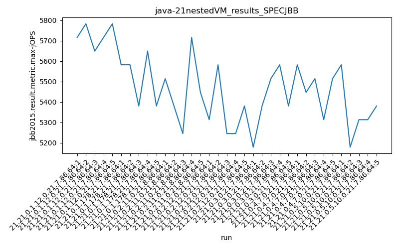
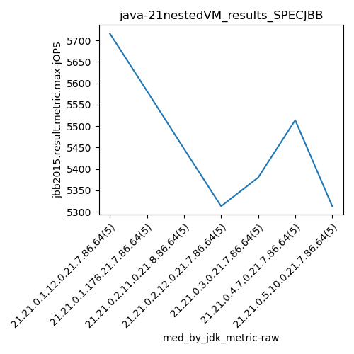
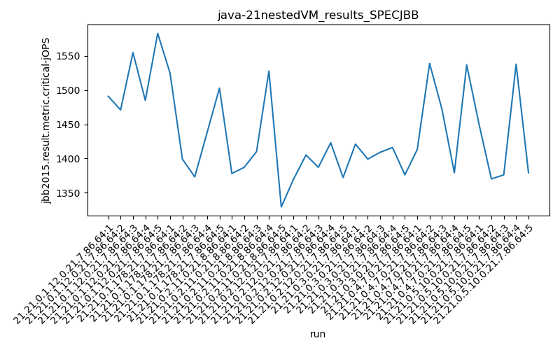
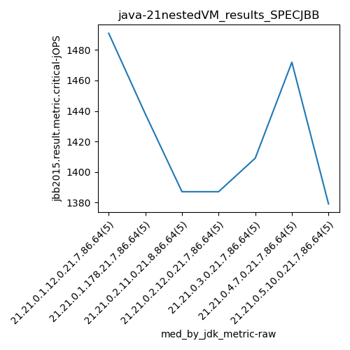

java-21 SPECJBB
Context at bottom
/home/jvanek/git/benchmarks-in-nested-virtualisation-toolchain/final_results/nestedVM_results/nestedVM_results_J2DBENCH
java-21
SPECJBB
/home/jvanek/git/benchmarks-in-nested-virtualisation-toolchain/final_results/nestedVM_results/nestedVM_results_RADARGUNs3
java-21
SPECJBB
/home/jvanek/git/benchmarks-in-nested-virtualisation-toolchain/final_results/nestedVM_results/nestedVM_results_DACAPO
java-21
SPECJBB
/home/jvanek/git/benchmarks-in-nested-virtualisation-toolchain/final_results/nestedVM_results/nestedVM_results_JMH
java-21
SPECJBB
/home/jvanek/git/benchmarks-in-nested-virtualisation-toolchain/final_results/nestedVM_results/nestedVM_results_SPECJBB
java-21
SPECJBB
nestedVM_results_SPECJBB
- nestedVM_results_SPECJBB - max-jops
- nestedVM_results_SPECJBB - critical jops
nestedVM_results_SPECJBB - max-jops
Expected number of java-21 JDKs: 7
1st avgmed_alljdks_metric:
/home/jvanek/git/benchmarks-in-nested-virtualisation-toolchain/final_results/result_processing.py /home/jvanek/git/benchmarks-in-nested-virtualisation-toolchain/final_results/nestedVM_results/nestedVM_results_SPECJBB jbb2015.result.metric.max-jOPS False
values: [5716, 5783, 5649, 5716, 5783, 5582, 5582, 5380, 5649, 5380, 5514, 5380, 5245, 5716, 5447, 5313, 5582, 5245, 5245, 5380, 5178, 5380, 5514, 5582, 5380, 5582, 5447, 5514, 5313, 5514, 5582, 5178, 5313, 5313, 5380]

Expected number of iterations: 5
final number of values: 35 out of 35
Pass rate: 100.0%
values: (5178, 5783, 5470.2, 5447)

** accuracy from all jdks and runs
more is better
MIN: 5178
MAX: 5783
AVG: 5470.2
MED: 5447
Relative differences 1:
MIN-MAX: 10.0 %
MIN-AVG: 5.0 %
MIN-MED: 5.0 %
MAX-MIN: -12.0 %
MAX-AVG: -6.0 %
MAX-MED: -6.0 %
AVG-MED: -0.0 %
stored to java-21.properties. sort | uniq that!
2nd avgmed_by_jdk_metric:
values: [5729.4, 5514.6, 5460.4, 5353.0, 5406.8, 5474.0, 5353.2]

values: [5716, 5582, 5447, 5313, 5380, 5514, 5313]

values: (5353.0, 5729.4, 5470.2, 5460.4)
values: (5313, 5716, 5466.428571428572, 5447)

** accuracy from all jdks where runs were avged
more is better
MIN: 5353.0
MAX: 5729.4
AVG: 5470.2
MED: 5460.4
Relative differences 1:
MIN-MAX: 7.0 %
MIN-AVG: 2.0 %
MIN-MED: 2.0 %
MAX-MIN: -7.0 %
MAX-AVG: -5.0 %
MAX-MED: -5.0 %
AVG-MED: -0.0 %
stored to java-21.properties. sort | uniq that!
** accuracy from all jdks where runs were medianed
more is better
MIN: 5313
MAX: 5716
AVG: 5466.428571428572
MED: 5447
Relative differences 1:
MIN-MAX: 7.0 %
MIN-AVG: 3.0 %
MIN-MED: 2.0 %
MAX-MIN: -8.0 %
MAX-AVG: -5.0 %
MAX-MED: -5.0 %
AVG-MED: -0.0 %
stored to java-21.properties. sort | uniq that!
nestedVM_results_SPECJBB - critical jops
Expected number of java-21 JDKs: 7
1st avgmed_alljdks_metric:
/home/jvanek/git/benchmarks-in-nested-virtualisation-toolchain/final_results/result_processing.py /home/jvanek/git/benchmarks-in-nested-virtualisation-toolchain/final_results/nestedVM_results/nestedVM_results_SPECJBB jbb2015.result.metric.critical-jOPS False
values: [1491, 1471, 1555, 1485, 1583, 1525, 1399, 1373, 1438, 1503, 1378, 1387, 1410, 1528, 1329, 1370, 1405, 1387, 1423, 1372, 1421, 1399, 1409, 1416, 1376, 1413, 1539, 1472, 1379, 1537, 1450, 1370, 1376, 1538, 1379]

Expected number of iterations: 5
final number of values: 35 out of 35
Pass rate: 100.0%
values: (1329, 1583, 1436.7428571428572, 1413)

** accuracy from all jdks and runs
more is better
MIN: 1329
MAX: 1583
AVG: 1436.7428571428572
MED: 1413
Relative differences 1:
MIN-MAX: 16.0 %
MIN-AVG: 7.0 %
MIN-MED: 6.0 %
MAX-MIN: -19.0 %
MAX-AVG: -10.0 %
MAX-MED: -12.0 %
AVG-MED: -2.0 %
stored to java-21.properties. sort | uniq that!
2nd avgmed_by_jdk_metric:
values: [1517.0, 1447.6, 1406.4, 1391.4, 1404.2, 1468.0, 1422.6]

values: [1491, 1438, 1387, 1387, 1409, 1472, 1379]

values: (1391.4, 1517.0, 1436.7428571428572, 1422.6)
values: (1379, 1491, 1423.2857142857142, 1409)

** accuracy from all jdks where runs were avged
more is better
MIN: 1391.4
MAX: 1517.0
AVG: 1436.7428571428572
MED: 1422.6
Relative differences 1:
MIN-MAX: 8.0 %
MIN-AVG: 3.0 %
MIN-MED: 2.0 %
MAX-MIN: -9.0 %
MAX-AVG: -6.0 %
MAX-MED: -7.0 %
AVG-MED: -1.0 %
stored to java-21.properties. sort | uniq that!
** accuracy from all jdks where runs were medianed
more is better
MIN: 1379
MAX: 1491
AVG: 1423.2857142857142
MED: 1409
Relative differences 1:
MIN-MAX: 8.0 %
MIN-AVG: 3.0 %
MIN-MED: 2.0 %
MAX-MIN: -8.0 %
MAX-AVG: -5.0 %
MAX-MED: -6.0 %
AVG-MED: -1.0 %
stored to java-21.properties. sort | uniq that!
/home/jvanek/git/benchmarks-in-nested-virtualisation-toolchain/final_results/nestedVM_results/nestedVM_results_RADARGUNs1
java-21
SPECJBB
pass rates:
nestedVM_results_SPECJBB=100.0%
Context:
- nestedVM_results
- SPECJBB